Instagram has played a huge role in changing the e-commerce landscape. For this reason, marketing on the platform is highly competitive. To have an edge, you need to learn how to market on Instagram.
This platform has grown leaps and bounds. It’s no longer a simple photo-sharing app but has become a marketing channel. Since its release, it has developed tools and features that help brands and businesses reach their market. This includes features like:
- Shoppable Instagram posts
- Advanced analytics
- More interactive Instagram Stories
- Developed IGTV
Additionally, with over one billion monthly active users, it really pays to be on Instagram. Make your presence known. This is where Instagram marketing comes into the picture.
In this guide, you’ll learn how to market on Instagram. Plus, we’ll take a closer look at influencer marketing and how to affiliate market on Instagram.
But first, let’s understand why Instagram marketing is in vogue.
Why Instagram Marketing?
Visual Nature
Instagram is first and foremost a visual platform. It’s the best place to share photos and videos. Therefore, brands and businesses have plenty of opportunities to market their products.
With Instagram, brands can build a visual presence.
Engaged Audience
According to Emarketer 2018, Instagram users are the second most engaged next to Facebook users. Additionally, 83% of them use the platform to discover new products.
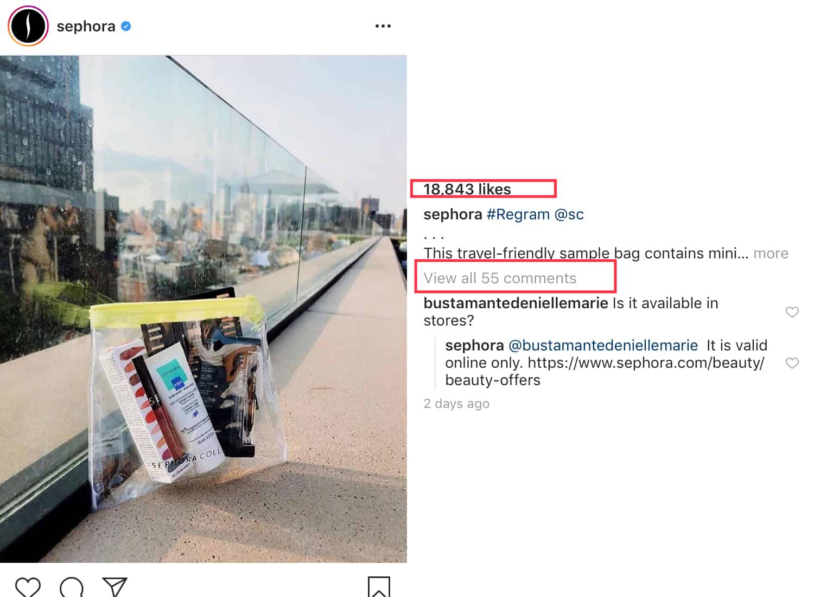
More importantly, Instagram users are also online shoppers. Based on a study, 72% of Instagrammers say they make a purchase decision after seeing it on the platform. The most popular categories are clothing, makeup, and shoes.
Knowing how to market on Instagram will get your products in front of these audiences.
New and Developed Tools
Why Instagram marketing? Because Instagram keeps developing new business-facing tools and features.
According to Instagram, they will develop shoppable posts even further. The aim is to browse and buy products without ever leaving the app.
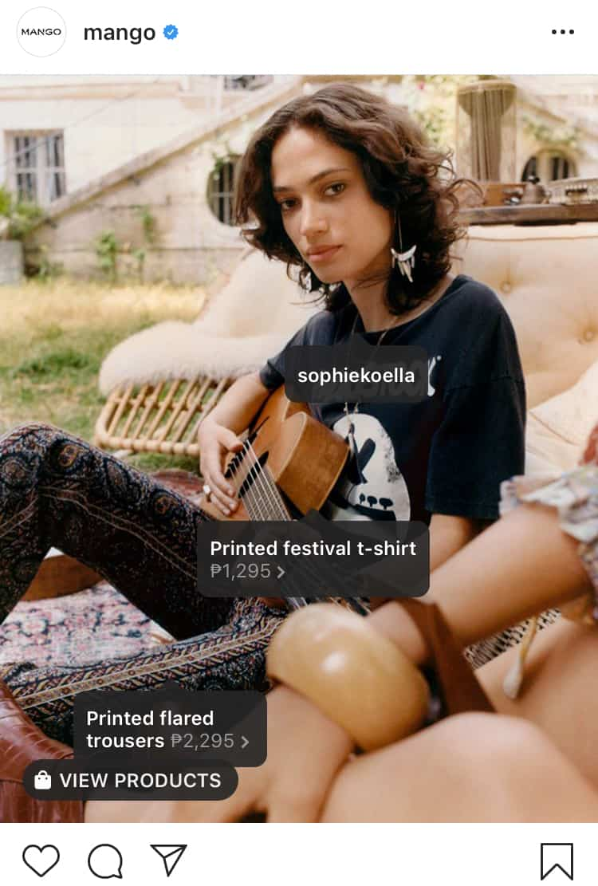
Not Only For Selling Products
Most importantly, Instagram is not only for selling products. What makes Instagram a wonderful marketing channel?
- It helps build brand awareness
- Connects businesses with new audiences and potential customers
In fact, influencers and bloggers also thrive on the platform. With the right Instagram marketing strategies, they can grow their account.
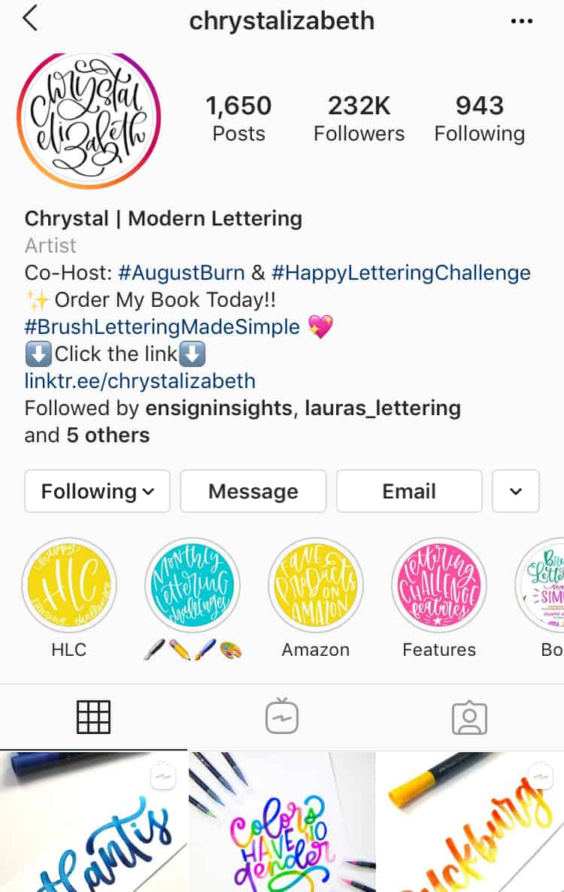
Ready to learn how to market your business on Instagram?
How To Market On Instagram Tip #1: Switch To A Business Account
First of all, you need a business account. Why? Because a business account gives you access to exclusive features including:
- Contact and email buttons
- Access to Instagram Analytics
- Promote posts
- Instagram ads
- Links to stories
- Shoppable posts and more!
Want to make the switch? Then go to your profile and tap the three horizontal lines.
Go to settings.

Tap the “Switch to Business Profile”. You will then be asked to choose a category.
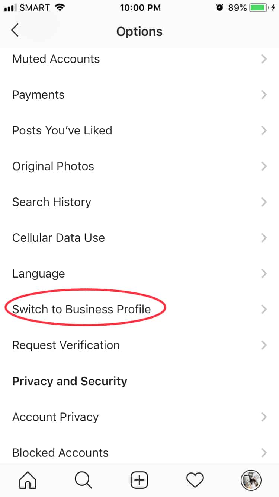

Review your contact info and add your Facebook page.
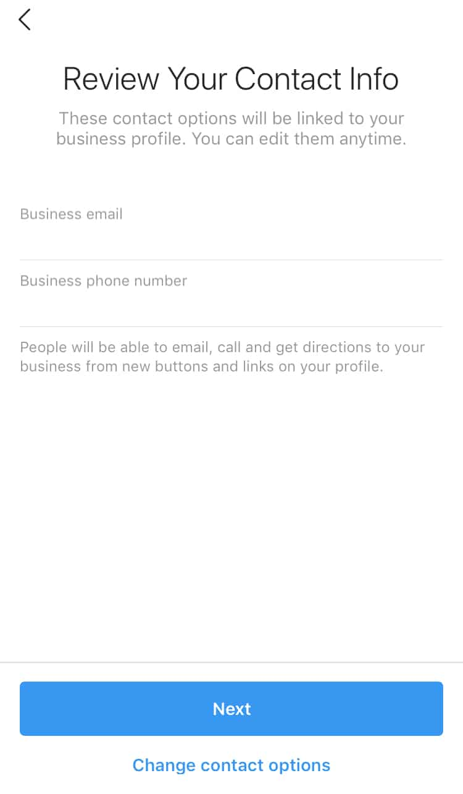 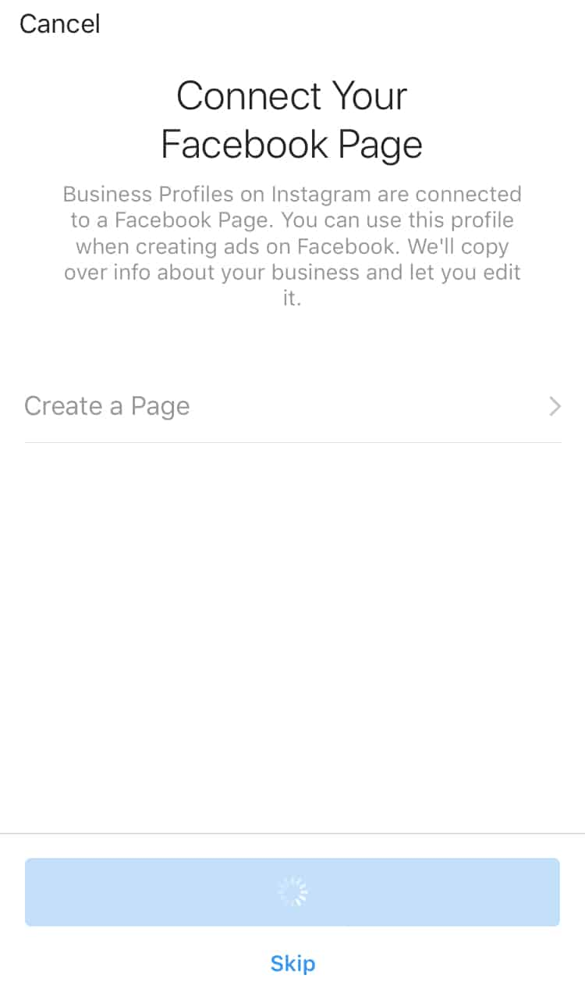
How To Market On Instagram Tip #2: Identify Your Business Goals
The next crucial step on how to market your business on Instagram is identifying business goals. Your objectives will determine your Instagram marketing strategies. Additionally, these will influence the metrics you use to track success.
Here are a few questions you can consider when determining your goals:
- Why Instagram?
- Are your customers on Instagram?
- How much time and budget are you willing to invest?
- Do you want to use Instagram as a tool for customer service? Build brand awareness? Connect with customers?
How To Market On Instagram Tip #3: Know Your Audience
It’s time to look at your audience. Learning how to market your business on Instagram means researching your target demographic.
Who is your target market? Are they on Instagram?
According to Statista, 34% of the billion monthly active users on the app are between the ages of 25 and 34. Users between the ages of 18 and 24 comprise 31%.
Does your target audience fall in this age group?
Aside from age, you need to identify their location and interests.
Here are a few questions to get you started:
- What hashtags are they using?
- Who do they follow?
- Where do they usually hang out?
- What types of content do they like and share
Getting to know your audience is a crucial step in creating your Instagram marketing strategy. For starters, Facebook conducted a study. They interviewed and surveyed teens and young adults.
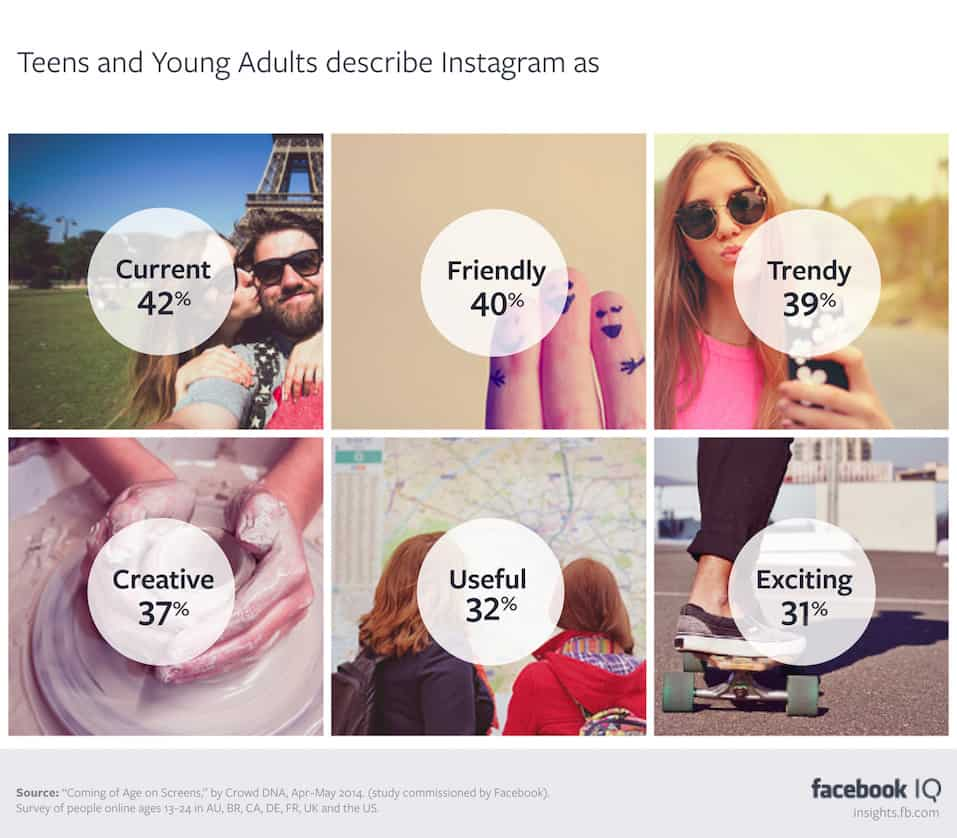
Here are a few tips they’ve come up with:
- Show your audience what makes your brand different from the rest.
- Post visually appealing and creative content.
- Based on the study, teens and young adults think of Instagram as current, creative and useful. Therefore, showcase content that’ll delight and surprise them.
How To Market On Instagram Tip #4: Optimize Your Profile and Feed
You only have a few seconds to convince your audience to tap the follow button. Therefore, pay close attention to your profile.
The Instagram profile is pretty straightforward. Simply fill out your contact information, add a description, and choose a profile photo.
But is there a way to spice them up? Here are a few things you can do:
Choose Your Name
Most brands opt to use their brand name as a handle. In doing so, it boosts brand recall and awareness.
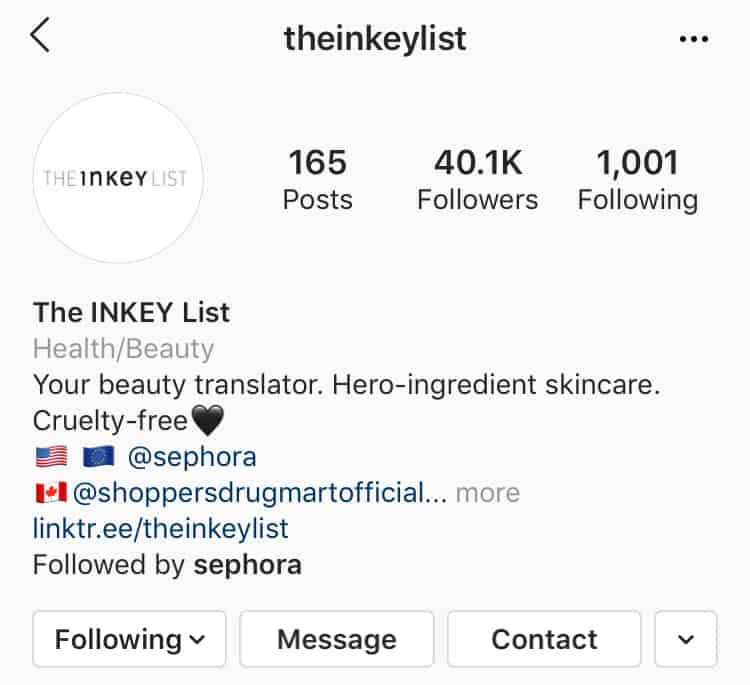
Add a “Gram-Worthy” Profile Photo
When you’re learning how to market on Instagram, always remember to stay on brand. This includes your profile photo.
Take this example from @supergoop. They used the first letter of their brand font.
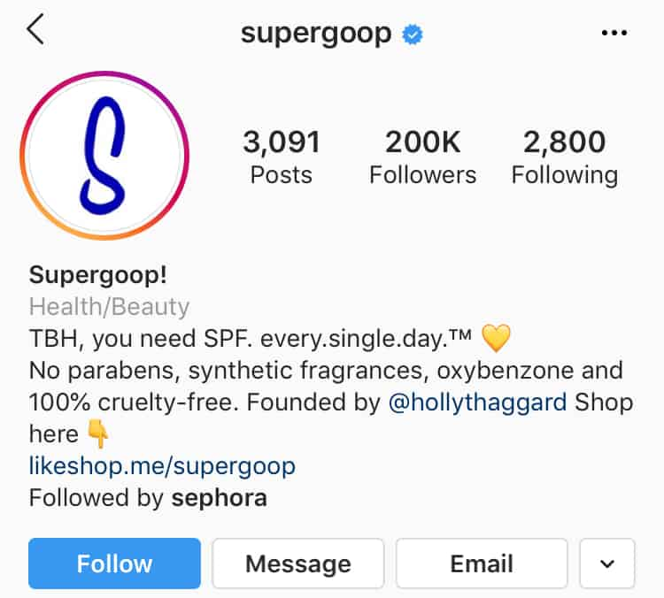
Another tip is to go for a sleek, minimalist look with a high resolution. Look at @kleankanteen‘s profile. They managed to use their whole name with a clean, legible font.
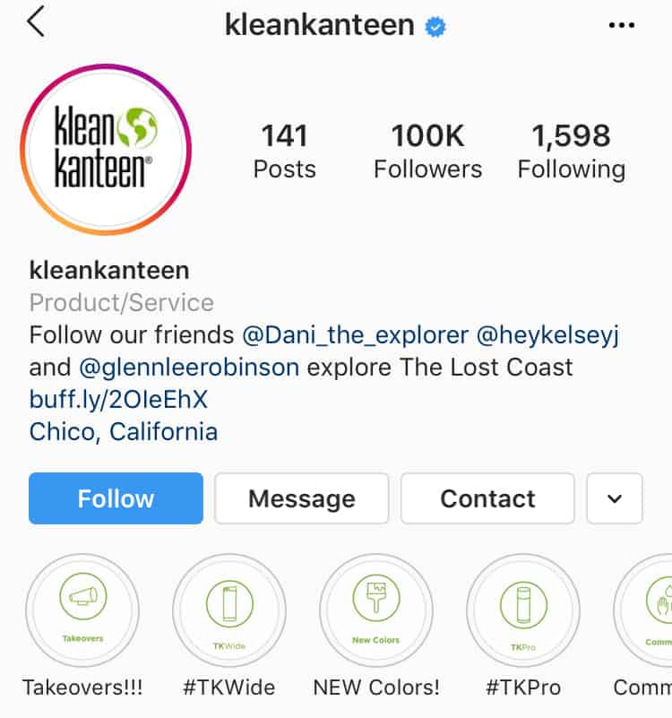
Write An Engaging Bio
You have 150 characters to tell your story. Use this space to introduce your brand.
Look at how @heartmanclothes, a clothing brand, introduced themselves. They kept it short and on-point.
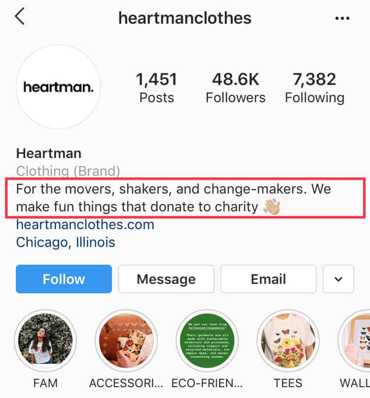
Another option is to add branded hashtags. In doing so, potential followers will know where to go to find more of your products.
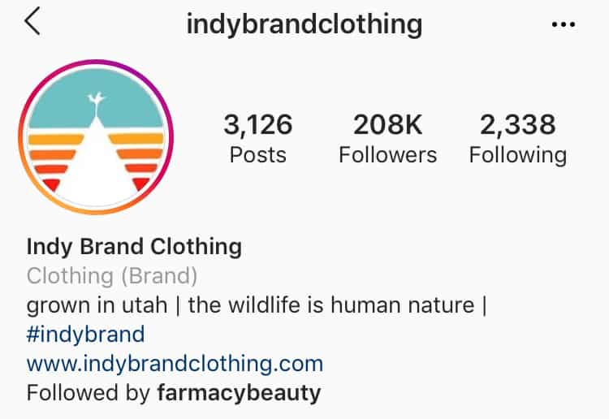
Branded hashtags don’t always have to include your brand name. It could be a campaign name. Or maybe use a hashtag for your brand advocacies.
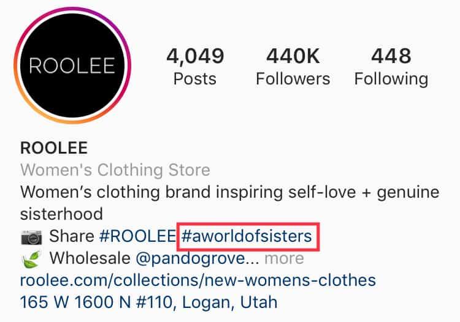
Lastly, make sure to add your website. You can also use this feature to showcase a link to your blog or contest.
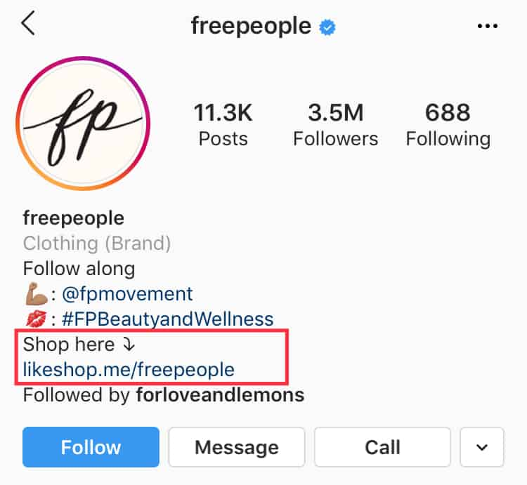
Some brands use this area to direct their audience where to shop.
Create A Cohesive Feed
This means selecting a color palette or theme. This builds your brand aesthetic which helps your audience easily identify your content.
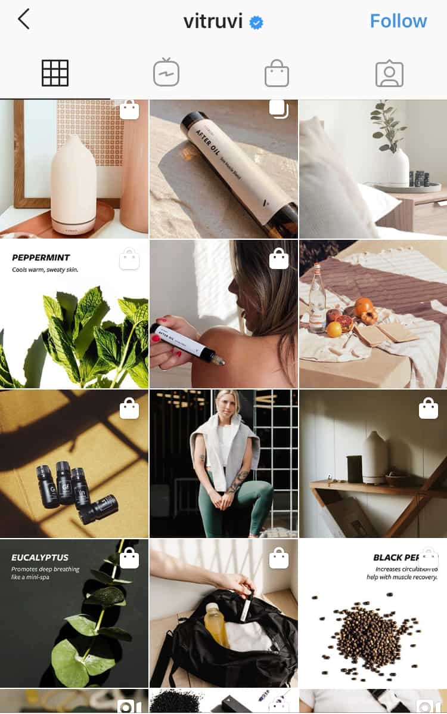
Your photos should not only look great individually. They should also look beautiful together.
How To Market On Instagram Tip #5: Post Engaging Content
To reach your audience, you need engaging content. This means knowing the type of posts they like. Do they like product photos? Are they more interested in video tutorials or behind the scenes videos?
Tip: Experiment with videos and images then compare their performance. The results will tell you what content type to post.
However, you also need to remember that Instagram users love diversity. So don’t bore them with just one type of post!
Instagram is a visual platform. Therefore, focus on quality and aesthetics. A study from Curalate suggests that lighter images perform better than darker ones. Additionally, images with contrasting textures usually get more likes.
Videos, on the other hand, should be kept short. According to News Whip, the average video length is 30 seconds. Plus, the audience responds better with inside stories on celebrities.
Another type of content you should add to your Instagram marketing strategy is UGC.
Based on the L2 study on UGC, consumers who see user-generated content are 4.5% more likely to purchase. This increases to 9.6% when engagement happens.
But why are UGC effective?
For one, user-generated content serves as free promotion. Your audience is promoting your brand by posting about it on their feed and tagging you.

Secondly, it serves as an honest review. Consumers will look at the post and consider the other user’s experience with your brand, product, or service.
How do you use this strategy for Instagram marketing?
- Ask your audience to tag you or use your branded hashtag.
- Use contests to reward users. Feature contest winners in your feed.
- Repost UGC that feature your product or services. Make sure to give credit where it is due.
How To Market On Instagram Tip #6: Collaborate With Influencers
Another highly efficient Instagram marketing strategy is partnering with influencers. In fact, 92% of marketers find this tactic effective.
Why? Because influencers are trusted by their audience. 22% of users, between the ages of 18 and 34, make purchase decisions based on an influencer’s endorsement.
Influencers have built a trusted reputation through social media platforms. They have a considerable number of following. Using their influence, they promote brands and get sales.

There are many ways to utilize influencer marketing to grow your business.
- Product collaboration
- Instagram takeover
- Product reviews
But one of the most effective strategies to market your product and drive sales is through affiliate marketing. This tactic is highly beneficial to both brands and influencers.
What Is Instagram Affiliate Marketing?
Instagram affiliate marketing is a strategy where an influencer earns a commission for every sale made. Basically, an influencer, also called “affiliate”, collaborates with a business. They will then promote the products and will be given an affiliate link or code. Sales are then tracked through the link.
Want to learn more on how to affiliate market on Instagram?
But first, here are a few things to remember:
- A consumer doesn’t need to purchase a product for an influencer to get paid.
- There are different programs to choose from.
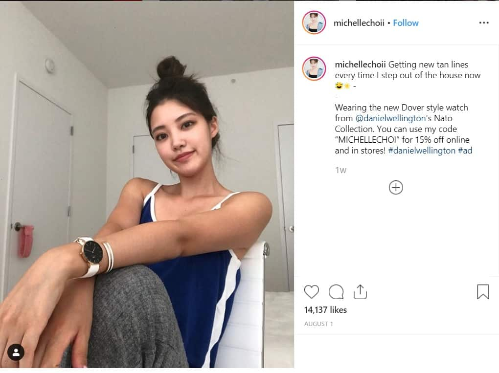
How To Affiliate Market On Instagram #1: Choose An Affiliate Structure
- Pay per sale: This is the most common Instagram affiliate marketing structure. With this program, Influencers earn a certain percentage for every sale made. The influencer needs to have a good Instagram marketing strategy.
- Pay per lead: This structure is more complex. The influencer earns when they successfully converted a lead. This means they need to persuade a customer to visit your website and complete an action, like sign up for a free trial or subscribe to a newsletter.
- Pay per click: With this program, influencers need to successfully redirect consumers to your website. They earn an incentive based on the increase in web traffic.
How To Affiliate Market On Instagram #2: Promote Links On Instagram
Instagram users can’t place a link every time they post. So how to affiliate market on Instagram with this setback?
Don’t fret! There are a few ways to go around this:
Adding Affiliate Link In The Bio
Influencers can place their affiliate link in their bio. In doing so, they can easily direct their followers to the site.
Tip: Influencers can add a CTA in their post, like “Click the link in the bio!”.
This is great for when influencers are promoting the same brand or product. But what if they promote different products?
They can simply update their bio to the latest affiliate URL. So, what’s the catch?
If a user stumbles upon an older sponsored post, they’ll be directed to a different site.
Use The Swipe-Up Feature In Instagram Stories
This affiliate Instagram marketing strategy works for business accounts with more than 10,000 followers.
The swipe-up feature makes it easy for users to visit the site. Influencers can simply post a photo or video in their Instagram Story. Then add a CTA, like “Swipe Up To Shop!”.
Need more tips on how to affiliate market on Instagram?
Use link apps, like Linktree, on Instagram. With this app, you can add multiple affiliate links as you like.
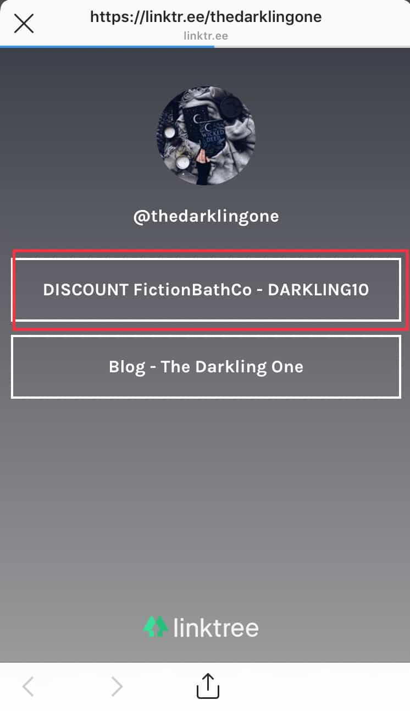
Here are a few tips:
Go to Linktr.ee and tap “Sign Up with Instagram”
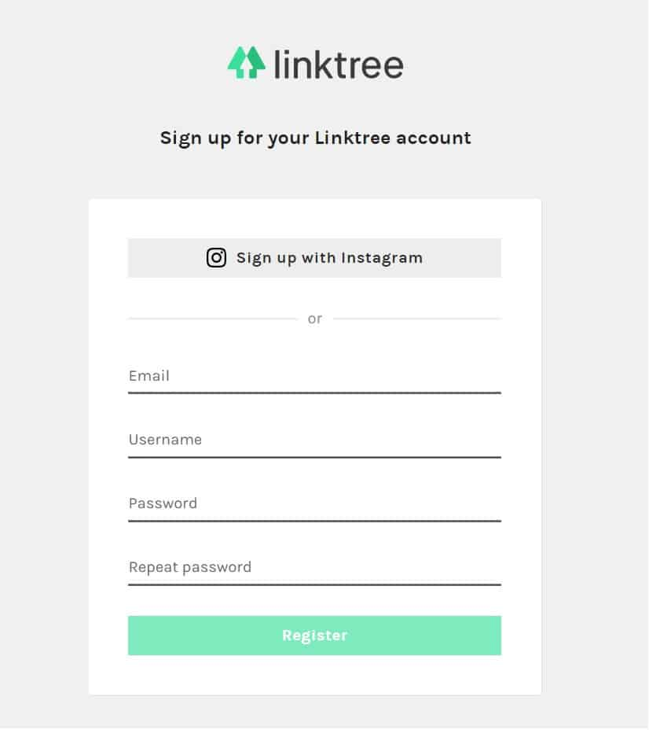
You need to authorize the app to access your account.
Simply fill in your details.
Pick the plan you want.
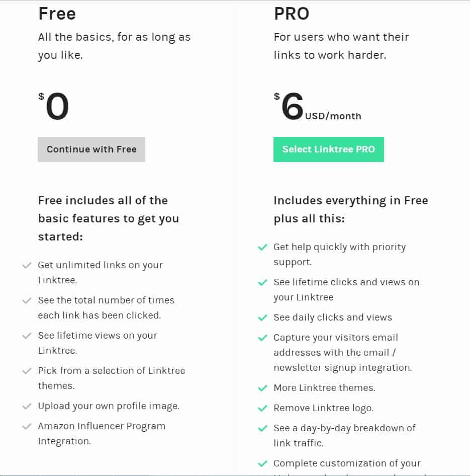
Once you’re verified, a custom Linktree link will be provided. Use this link in your bio.
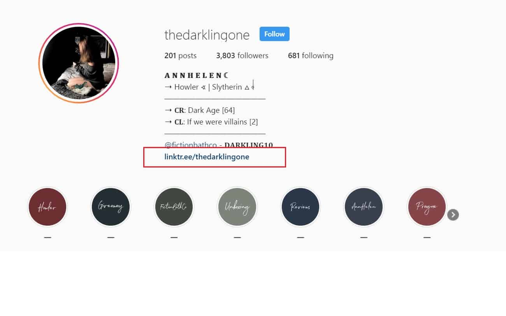
These are just a few tips on how to affiliate market on Instagram. Whether it’s affiliate partnerships or influencer collaborations, trust is crucial.
Influencers look at a brand’s value. Brands, on the other hand, rely on the influencer’s level of trust.
In Conclusion
A strong Instagram presence opens plenty of opportunities. That’s why Instagram marketing has become highly competitive. Learning how to market on Instagram is crucial.
Use the Instagram marketing tips we’ve listed above to run a successful campaign. Don’t be afraid to experiment. Be creative and keep your content diverse!


1 Comment